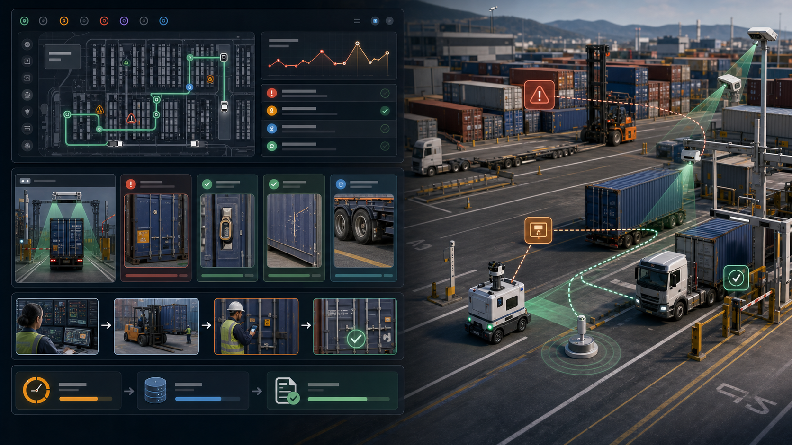

箱子停住
一个箱号识别失败、状态未同步或查验 hold 没处理，会变成延误、滞箱费和客户投诉。
Pitch 58 · Container Yard Exception Closure
YardLoop 是面向港口、内陆港、集装箱堆场、铁路联运场和大型货主堆场的边缘视觉异常闭环平台：把箱号、封签、损坏、底盘车、箱位和放行状态从现场事实变成可处理、可举证、可回写的操作闭环。
01 · Problem
港场和堆场已经有 TOS/YMS、闸口系统、预约、吊机、拖车和摄像头，但错箱、错位、封签异常、箱损、底盘车问题、查验 hold、放行争议和滞箱费仍会散落在邮件、照片、对讲机、Excel 和人工备注里。
一个箱号识别失败、状态未同步或查验 hold 没处理，会变成延误、滞箱费和客户投诉。
箱损、封签、底盘车、放行和进出闸照片常在不同系统里，事后争议很难还原。
TOS/YMS 记录“应该在哪里”，但客户、调度和保险要的是“现在真实发生了什么”。
AMR、车载相机、无人车和固定 OCR 能看见现场，却没有统一异常语言和回写动作。
02 · Why Now
买方不是第一次数字化港场。变化在于：供应链波动让异常更贵，监管让费用证据更重要，自动化让机器视觉进入闸口和堆场，端侧 AI 让异常可以在现场实时闭环。
03 · Insight
一个港场可以先不重建吊机和水平运输。只要把“现场看见的例外”变成可指派、可验证、可回写的任务，就能更快减少争议、压缩滞留、提高放行可信度。
箱号、箱位、封签、箱损、底盘车、闸口照片、查验状态和放行证明统一成事件。
异常不是截图，而是有责任人、SLA、任务类型、复核动作和系统回写的 case。
OCR 失败、遮挡、雨夜、坏角度、人工纠正和误报进入 LeRobot HIL 数据集。
04 · Solution
它接入闸口 OCR、堆场摄像头、车载相机、AMR、小型巡检车、RTK/UWB、人工复核和 TOS/YMS，把每个箱子的现场状态推进到处理完成，而不是停在“有人拍到过”。

05 · Product Workflow
比赛 demo 可以用桌面集装箱模型、摄像头、二维码/OCR mock、车载小车和 mock TOS，把港场闭环讲清楚。
闸口、堆场相机或小车拍到箱号、封签、底盘车和箱损，端侧模型生成事件。
YardLoop 对比 TOS/YMS 计划、预约、箱位、hold、release 和历史照片。
异常进入队列：低置信度 OCR、错箱位、封签异常、damage claim、chassis roadability。
人工复核、巡检小车或固定相机补证据，形成 before/after 和 release proof。
状态回写 TOS/YMS；失败视角和人工修正进入 LeRobot HIL 和下一轮 edge 模型。
06 · Market Wedge
首单应该选择异常频率高、费用争议多、现有 TOS/YMS 已经存在但现场证据分散的场地。
闸口 OCR、箱损、封签、查验 hold、放行争议和堆场错位是高频场景。
铁路、卡车、仓库和港口系统交接多，异常责任更容易断裂。
底盘车 roadability、照片证据、维修任务和责任归属可独立成付费模块。
汽车、零售、制造和跨境货主有自有堆场、滞留费用和承运商争议。
reefer plug、setpoint、门封和温控证明可复用 ColdChainLoop 数据模型。
上海、宁波舟山、深圳、青岛、天津等港口已推进自动化，仍需要跨系统异常闭环。
07 · Business Model
YardLoop 的定价锚定减少 D&D 争议、加快闸口处理、提高 damage/chassis 证据、减少人工巡场和提升放行可信度。
海外 30k-90k 美元；中国 30-100 万元，6-8 周跑通一个 gate lane + 一个 yard block。
8k-25k 美元 / yard / month，按 lane、block、摄像头、小车、TOS connector 和报告分层。
规模化后按 scan、closed exception、damage proof、chassis inspection 或 dispute packet 加价。
gate cycle time、OCR exception rate、D&D exception resolution、damage claim cycle、yard rehandle、release latency。
08 · Go-To-Market
YardLoop 的入口不是替换 TOS，也不是卖无人车，而是把一个高频异常流程变成客户能当天处理的队列和证据包。
中小码头、内陆港、铁路联运场、chassis pool、跨境货主堆场和 3PL yard。
gate OCR low confidence + damage/seal proof + release hold queue。
TOS/YMS 集成商、闸口 OCR 设备商、港口自动化 SI、保险/理赔服务和车队管理商。
从闸口扩到 yard block、reefer lane、chassis shop、rail interchange 和多站点 exception graph。
09 · Competition
港场不是没有软件和自动化，而是现场事实、异常责任、证据包和训练数据没有形成一个独立的闭环层。
TOS 主系统强；YardLoop 不替代它，只把现场异常和 proof 回写进去。
码头运营软件成熟；YardLoop 补低置信度视觉、人工复核和 exception evidence。
闸口和吊机 OCR 强；YardLoop 把 OCR 失败、箱损和封签异常变成任务。
设备和自动化能力强；YardLoop 做跨设备现场事实层和 HIL 数据层。
计算机视觉切入 drayage 和堆场；YardLoop 聚焦港场 exception closure 和 TOS/YMS connector。
大型港口有自研/集成系统；YardLoop 可做私有部署、边缘模型和跨系统异常图。
10 · Moat
每关闭一个异常，系统都会学习哪类现场证据能减少争议、哪个摄像头角度容易失败、哪个客户/承运商/场站的处理路径最短。
箱号、箱位、封签、damage、chassis、gate、hold、release、照片和任务状态的时间线。
TOS/YMS、gate OCR、预约、查验、chassis maintenance、WMS/TMS 和客户 portal。
费用争议、damage claim、release proof、roadability 和交接责任模板。
雨夜、反光、污损箱号、遮挡、低角度、中文/英文标识和人工纠正片段。
gate、yard block、reefer、rail interchange、chassis pool 和客户堆场流程模板。
Qualcomm AI Hub / QNN / QAIRT profile、离线缓存、弱网回写和模型回滚。
11 · Product Architecture
架构目标是把高吞吐现场拍到的“模糊事实”变成可追踪事件，同时不把港场视频、客户货物、车牌和运营数据默认全量上云。
gate OCR、yard pole camera、车载相机、AMR、小车、RTK/UWB、RFID、二维码和人工手机补证。
箱号 OCR、seal check、damage detection、chassis condition、slot verification、低置信度判断。
ROS 2 小车/AMR、Nav2 waypoint patrol、yard geofence、human review 和安全接管。
container_event -> TOS/YMS case；同步 hold、release、task owner、proof_uri 和 close reason。
HIL correction -> 中国/海外云训练 -> AI Hub/QNN/QAIRT artifact -> edge OTA。
12 · Competition Demo
演示不需要真实码头，只需要一个桌面堆场、一台相机/小车、几个箱模、mock TOS 和 dashboard。
摄像头识别箱号与封签，低置信度触发 YardLoop exception。
小车巡检发现箱子在错误 block，damage card 自动生成。
人工确认箱损或封签，系统要求补拍一个角度并分派处理任务。
处理完成后回写 mock TOS/YMS，dashboard 显示 release proof。
OCR 失败和坏角度导出 LeRobot episode，展示区域云训练与 QNN profile。
13 · Why Qualcomm
YardLoop 把 Qualcomm 的价值放在现场：高吞吐 OCR、箱损视觉、低延迟判断、私有网络、低功耗小车和可部署模型 artifact。
闸口、车载、吊具、堆场杆位和小车摄像头都需要本地融合。
箱号、封签、箱损和底盘状态在现场出结果，低置信度才进入复核。
私有 5G / Wi-Fi 6E、弱网缓存、离线队列、站点内小车和摄像头协同。
RB3 Gen 2 做桌面 demo；RB6 / QCS8550 / Dragonwing IQ 路线做多摄像头生产版本。
AI Hub、QNN、QAIRT、ONNX Runtime QNN EP 让模型可 profile、可回滚、可区域部署。
14 · Ask
比赛阶段要证明的是：港场现场事实能在边缘识别、被人工复核、被系统回写，并且变成下一轮训练数据。
RB3 Gen 2 / RB6 / Vision Kit 或 Dragonwing dev kit，用于多摄像头 OCR 和小车巡检。
一个内陆港、堆场、chassis pool、TOS/YMS 集成商或港口自动化 SI。
20-50 个箱模/真实匿名样本、闸口照片样例、mock TOS API、异常状态机和复核规则。
YardLoop 的一句话 pitch：港场运营团队用它把箱号、封签、损坏、底盘车、箱位和放行状态变成一条可处理、可举证、可回写、可训练的异常闭环。